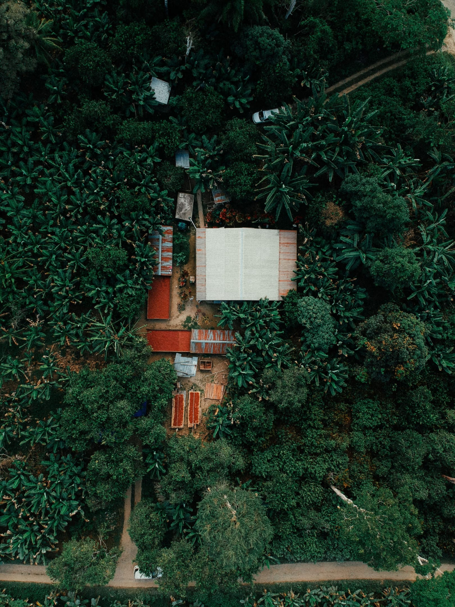
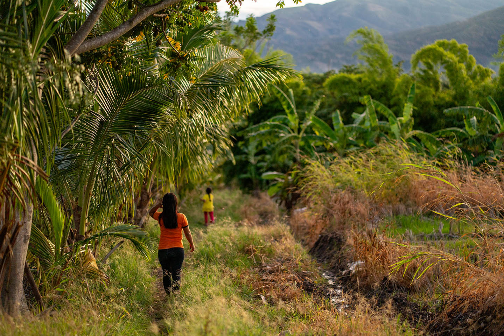
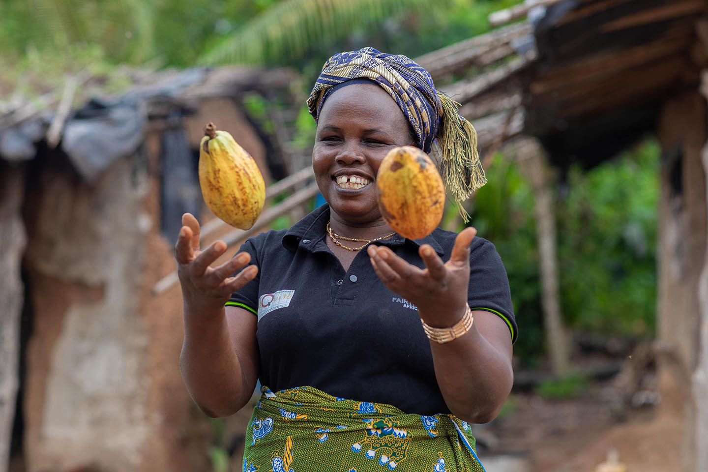
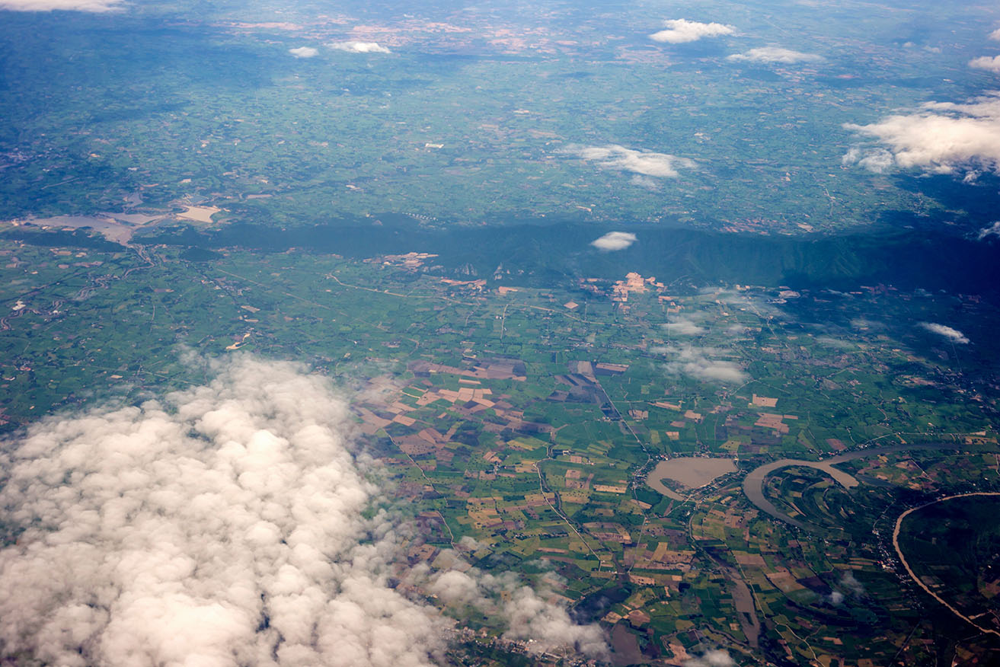

Equipping ~1000 Farmer Cooperatives to Protect Forests
Providing cocoa & coffee farmer cooperatives with automation tools and data insights for a more equitable and sustainable world.

Months of work to Days of work.
0%
reductionin start-to-end time for users to get results.

Farmers are the front line of forest protection.
~1 million Fairtrade farmers need to efficiently map and manage ~2,5 million hectares of farm plots, to support EU Deforestation Regulation readiness. All while supporting their communities' livelihoods.
Global scale requires new approaches to data and workflow automation.
36
Certified cocoa & coffee countries across 3 continents
> 1 million
Farm plots needing validated geodata
20+
Automated quality checks replacing manual review

One shared operating view.
By digitizing the plot validation workflow and integrating satellite monitoring, we created a unified platform that turns complex geospatial data into clear, actionable insights. Producers and their trade partners can collaborate efficiently and proactively manage deforestation risk at scale.



 Risk to monitor
Risk to monitor
Satellite intelligence turns deforestation risk into action.
By integrating satellite-based monitoring, every plot is continuously assessed against deforestation indicators - giving producers an evidence-based view of environmental risk before the coffee & cocoa product enters the market.
The platform changes how Fairtrade cooperatives interact with their data and trade partners, all through an approachable and thoughtful interface. Behind the scenes, a powerful data validation engine, integrations and automated workflows crafted by Zure make this possible.

xxx
Technology +
Human impact.
If your business is looking to create an impact,
let’s talk about how we can help you get there.